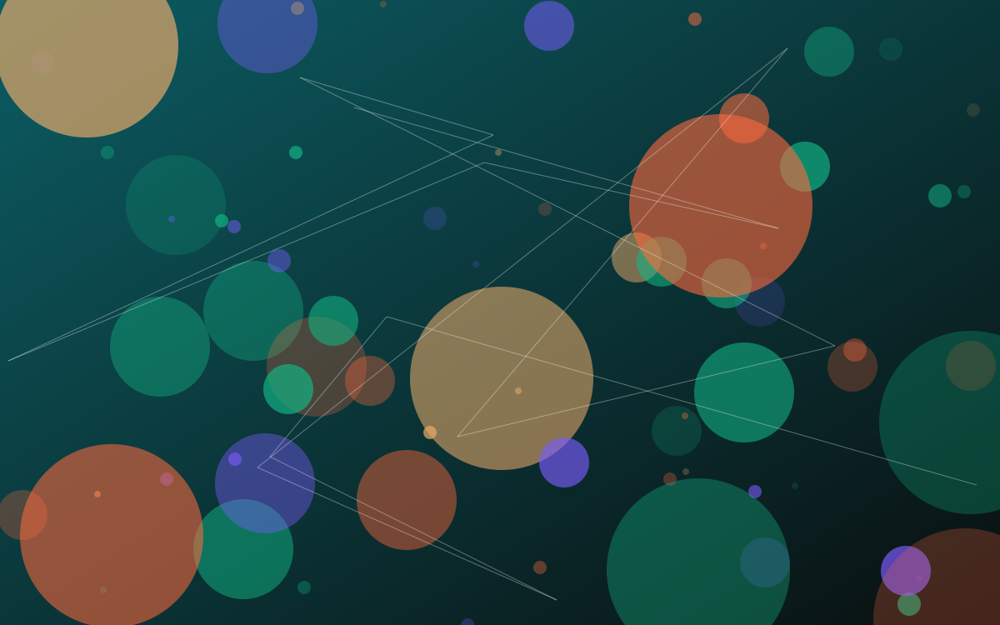

The Signal · Issue 01 · Frontier Models
Tokens per megawatt: the metric behind the machine
Microsoft is making its own Maia chips the primary inference system for its products, and framing the case in tokens per watt. The choice of metric tells you what the industry now optimises for.

Facts are attributed and linked to their sources. The analysis and opinions are the author's own.
What it is
On 12 October Microsoft's Scott Guthrie announced that Azure Maia 200 is serving production workloads including Microsoft Copilot, and that Microsoft will scale the Maia family to multi-gigawatt deployments starting in 2027, making Maia the primary inference system for its products and services.
Microsoft says Maia 200 delivers up to 1.7x more tokens per watt for some built-in AI capabilities compared with leading GPU infrastructure, and that Maia 300, due for production deployments in 2027, is expected to deliver 40% more tokens per megawatt than leading GPU-based systems. Maia 300 is described as inference-first, with eight HBM4 stacks providing 18.0 TB/s of memory bandwidth within a 950-watt TDP, and 96-accelerator racks within a 167-kilowatt envelope.
The same week, NVIDIA launched RTX Spark to run capable models locally on Windows PCs, the other end of the same economics: moving inference to where the user is.
Why it matters
Every industry eventually picks a unit of efficiency, and the unit shapes behaviour. AI infrastructure has settled on tokens per watt or per megawatt. It is a sensible engineering metric. It is also a reminder that a token is not a unit of value: a long, verbose answer scores well on throughput and badly on usefulness.
A token is not a unit of value. Measure what the tokens bought.
This is the Goodhart pattern at industrial scale. If the cost case is made in tokens, organisations will be tempted to measure AI adoption in tokens consumed. The counter-metric has to be outcome-based: problems resolved, errors avoided, time returned.
To be fair to the engineers, tokens per watt is the right metric for the problem they are solving: serving a fixed demand with less power and less capital. Energy and memory bandwidth really are the constraints, and Microsoft's emphasis on reducing data movement reflects that. My concern is not with the metric in the data centre; it is with what happens when it leaks into business dashboards.
I have seen this pattern before with call-centre handle times, app downloads and dashboard counts. A number that is easy to count and roughly correlated with value becomes the goal, and the correlation weakens as people optimise it. 'Tokens consumed' as a measure of AI adoption would follow the same path.
The fix is a balanced pair. Report usage, and next to it report an outcome measure that usage should move: cases resolved without rework, time to decision, error rates. If usage rises and the outcome does not, that is the signal.
What I'd watch
- Whether enterprise AI dashboards report tokens or outcomes. The first is easy to count; the second is the point.
- Energy disclosure alongside capability claims, now that vendors are using per-megawatt framing themselves.
- The split between cloud and on-device inference, and what it does to data residency choices.
Sources
- Microsoft to expand Azure Maia system to multi-gigawatt deployments. Official Microsoft Blog, 12 Oct 2026.
- NVIDIA, Microsoft Kick Off a New Beginning for Windows PCs With RTX Spark and AI Agents. NVIDIA Blog, 7 Oct 2026.